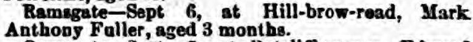
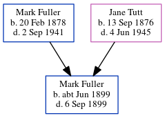

Mark Anthony Fuller cJun 1899 - 1899
[ Home ] | [ Calendar ] | [ Surnames Index ] | [ Census Index ] | [ Family History ]The child of Mark Fuller (a general laborer) and Jane Tutt (a general servant), Mark Fuller, the second cousin once-removed on the father's side of Nigel Horne, was born in Thanet, Kent, England c. Jun 18991,2 and baptized in Ramsgate, Kent, England on Jul 5, 1899.
He died on Sep 6, 1899 on Hill Brow Road in Ramsgate2.
Parents
- Mark Anthony was born on Feb 20, 1878
- Jane Eliza Caroline was born on Sep 13, 1876
Citations
- England & Wales births 1837-2006 - Findmypast
- England & Wales deaths 1837-2007 - Findmypast
Media
Thanet Advertiser - 16 Sep 1899

England & Wales births 1837-2006 - BMD/B/1899/2/AZ/000218/106
England & Wales deaths 1837-2007 - BMD/D/1899/3/AZ/000143/011
England Births & Baptisms 1538-1975 - R_884622879
Family Tree
Generated by ged2site. Last updated on Jun 11, 2024